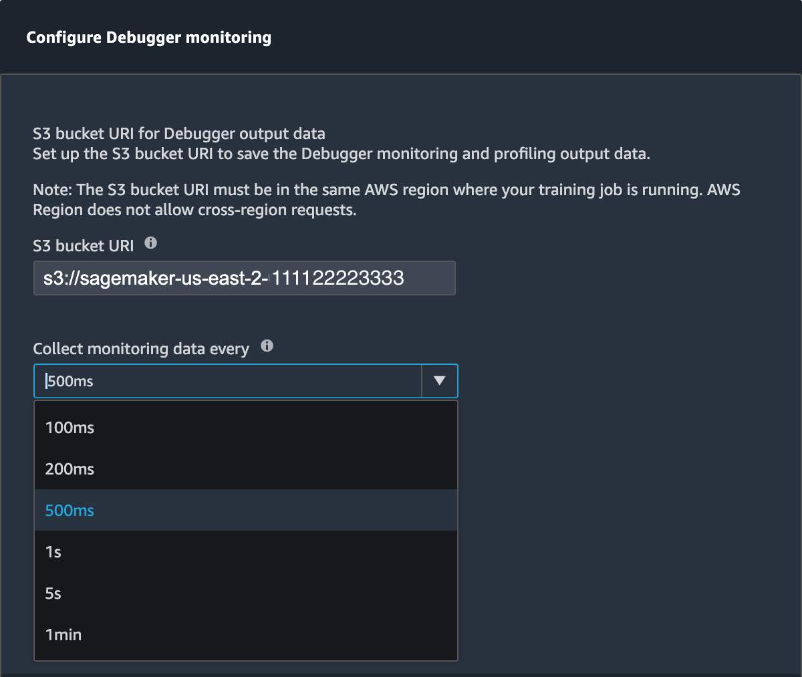

Amazon SageMaker Debugger Insights dashboard controller
There are different components of the Debugger controller for monitoring and profiling. In this guide, you learn about the Debugger controller components.
Note
The SageMaker Debugger Insights dashboard runs a Studio app on an
ml.m5.4xlarge instance to process and render the visualizations.
Each SageMaker Debugger Insights tab runs one Studio kernel session. Multiple kernel
sessions for multiple SageMaker Debugger Insights tabs run on the single instance. When you
close a SageMaker Debugger Insights tab, the corresponding kernel session is also closed. The
Studio app remains active and accrues charges for the ml.m5.4xlarge
instance usage. For information about pricing, see the Amazon SageMaker Pricing
Important
When you are done using the SageMaker Debugger Insights dashboard, shut down the
ml.m5.4xlarge instance to avoid accruing charges. For instructions
on how to shut down the instance, see Shut down the Amazon SageMaker Debugger Insights
instance.
SageMaker Debugger Insights controller UI
Using the Debugger controller located at the upper-left corner of the Insights dashboard, you can refresh the dashboard, configure or update Debugger settings for monitoring system metrics, stop a training job, and download a Debugger profiling report.
-
If you want to manually refresh the dashboard, choose the refresh button (the round arrow at the upper-left corner) as shown in the preceding screenshot.
-
The Monitoring toggle button is on by default for any SageMaker training job initiated using the SageMaker Python SDK. If not activated, you can use the toggle button to start monitoring. During monitoring, Debugger only collects resource utilization metrics to detect computational problems such as CPU bottlenecks and GPU underutilization. For a complete list of resource utilization problems that Debugger monitors, see Debugger built-in rules for profiling hardware system resource utilization (system metrics).
-
The Configure monitoring button opens a pop-up window that you can use to set or update the data collection frequency and the S3 path to save the data.
You can specify values for the following fields.
-
S3 bucket URI: Specify the base S3 bucket URI.
-
Collect monitoring data every: Select a time interval to collect system metrics. You can choose one of the monitoring intervals from the dropdown list. Available intervals are 100 milliseconds, 200 milliseconds, 500 milliseconds (default), 1 second, 5 seconds, and 1 minute.
Note
If you choose one of the lower time intervals, you increase the granularity of resource utilization metrics, so you can capture spikes and anomalies with a higher time resolution. However, higher the resolution, larger the size of system metrics to process. This might introduce additional overhead and impact the overall training and processing time.
-
-
Using the Stop training button, you can stop the training job when you find anomalies in resource utilization.
-
Using the Download report button, you can download an aggregated profiling report by using the built-in ProfilerReport rule of SageMaker Debugger. The button is activated when you add the built-in ProfilerReport rule to the estimator. For more information, see Configure Built-in Profiler Rules and Profiling Report Generated Using SageMaker Debugger.